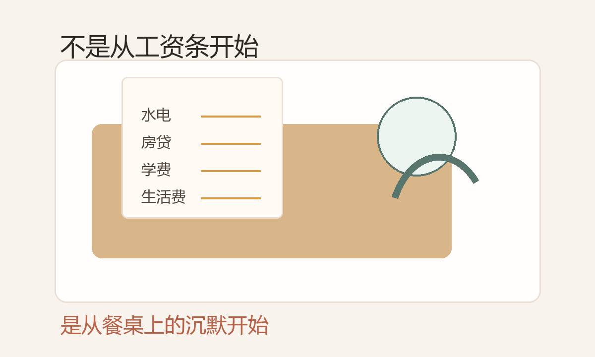
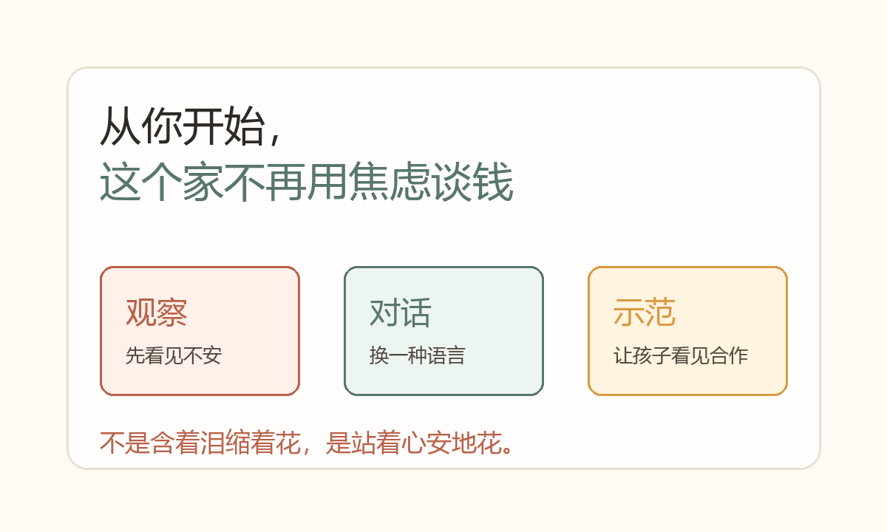

你有没有发现，只要手机弹出一条“大额支出提醒”，你心里就会先一紧。
哪怕账户并没有见底，脑子里还是会自动跳出那句熟悉的话：“钱很难赚，别乱花。”
你长大以后，以为这只是“还不够有钱”。可那种揪着的感觉，常常跟数字多少无关。它更像一种从小到大被反复灌进去的恐惧：一花钱就不安，一谈钱就紧张，一想到未来就只剩下“万一不够怎么办”。
这不是你一个人的问题。这是一整代人都可能卡住的金钱焦虑家庭模式。
金钱焦虑不是从工资条开始，是从餐桌上的沉默开始
很多人以为，自己的金钱焦虑是从开始工作、开始养家才出现的。但如果你认真回想，会发现它的源头要早得多。
- 家里一到月底就开始算账，水电、房贷、学费，算着算着气氛就凝重起来。
- 过年走亲戚，寒暄之后就开始问收入、房子、未来打算，回家路上大人又叹气说：“咱家命就是这样。”
- 你只是想要一双新鞋、一节兴趣班，得到的却是一大段“你知不知道赚钱有多难”。
那时候你不懂资产负债表，只知道：谈钱的时候，大人会紧张；花钱的时候，家里的空气会变冷；钱，似乎总是不够的。
于是你悄悄在心里做了一个等号：钱 = 不安全 = 吵架 = 麻烦。

你以为你在做选择，其实只是换了个壳重演原生家庭
很多人特别相信：“我跟我爸妈不一样，我会活出另一种人生。”但到了一定年纪，你会突然意识到，你以为你在做选择，其实是被写好的“金钱剧本”推着走。
- 明明收入还可以，可看到别人多赚一点、多买一套房，你立刻觉得自己落后了。
- 每次想给自己买点什么，第一反应不是“我需不需要”，而是“我配不配”。
- 账上有存款也不踏实，总觉得“再多一点才安全”，但多到多少才算够，自己也说不出来。
- 一谈到给父母钱、给孩子花钱，你就被罪恶感和压力夹在中间。
这不是简单的“成年人压力”。原生家庭最厉害的地方就在这里：它不只影响你的收入水平，更给了你一整套面对钱时自动会有的情绪和反应。
底层脚本没动，赚更多也可能只是更焦虑
很多人把解决金钱焦虑理解成“我要赚更多”“我要学理财”。这些当然有用，但如果底层脚本没动，你可能只是用同一套恐惧，驱动自己跑得更快。
你看了很多理财书，准备做决定时，最大的声音依然是怕亏、怕错、怕被骂。你知道要提升自己，但一想到尝试新东西，就会被“出事怎么办”的感觉吓退。你努力省钱，压抑久了又在某个瞬间补偿性消费，然后陷入新一轮自责。

从你开始，这个家不再用焦虑谈钱
那我们到底可以怎么做？不需要一夜之间变成理财高手，也不用强迫自己立刻“不焦虑”。先从三个小动作开始。
看账单时先不贴标签，只问：“原来我在这里这么没有安全感。”
把“别乱花”改成“我要更清醒地用它，而不是用恐惧管自己”。
让孩子看到：钱可以被讨论，压力可以被合作处理，人比钱更重要。
真正的打破，不是暴富，而是换了一种活法
很多人幻想，打破金钱焦虑的那一天，一定是突然暴富。但现实往往相反，真正的转折点发生在很小的瞬间。
- 你第一次没有因为给自己花钱而自责，而是真心说：“谢谢你，辛苦了。”
- 你第一次在伴侣面前坦白自己的金钱恐惧，而不是用指责把对方推开。
- 你第一次在孩子面前平静地谈预算，而不是把压力丢给他。
就在这些瞬间，你让这个家族从“用焦虑谈钱”，变成“用觉察和合作谈钱”。它也许不会立刻改变账户里的数字，但会改变你看待数字的眼光，也会改变你留给下一代关于钱的记忆。
不是含着泪缩着花，是站着心安地花。
真正的金钱自由，从来不只是赚到多少钱。它是你不再被上一代的恐惧驱动，而是由你自己决定怎么过这一生。你可以认真规划，也允许享受当下；你在给父母、给孩子花钱时，不再是“还债”，而是带着清醒、带着爱。
从你开始，这个家族关于“钱”的故事，就已经不一样了。
如果你也想改写旧模式
虢海平 NLP 与萨提亚家庭关系课程，关注的不是让你立刻变成另一个人，而是帮你看见那些自动反应从哪里来，然后一点点换成更自由、更有爱的选择。
愿你不是跪着回报，也不是含泪硬撑，而是站着、清醒地改写自己的故事。